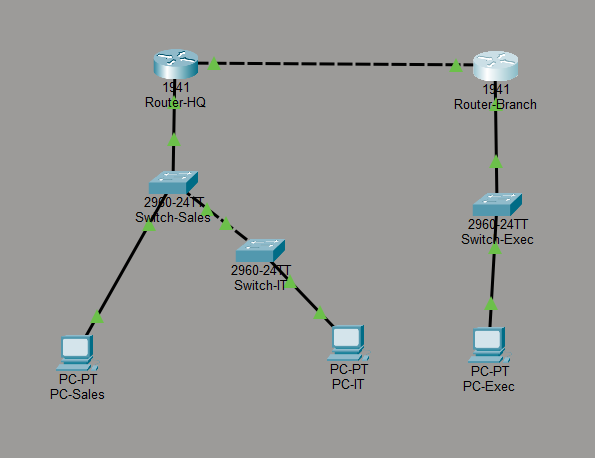
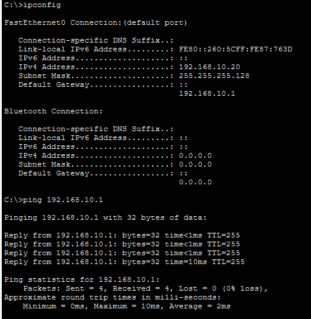

Handing out equal-sized subnets from a single block is the most common mistake in enterprise IP planning. A department with five workstations gets a subnet sized for two hundred and fifty — and the addresses wasted there are unavailable when a new building comes online eighteen months later. Variable Length Subnet Masking is the corrective technique: right-size every subnet to its actual headcount, and you preserve room to grow inside the block you already own.
This engagement designs and simulates a multi-subnet corporate topology in Cisco Packet Tracer, taking a single Class C private block and slicing it mathematically into the exact subnet sizes each department requires. The work spans address-planning math, physical topology design (including a cascaded switch fabric to extend port count without adding router hardware), and CLI-level Layer-3 provisioning to make the resulting subnets reachable end-to-end.
All design and verification work was performed inside Cisco Packet Tracer. The topology uses the standard router-on-a-stick and cascaded-switch patterns that transfer directly to physical hardware, but the engagement did not extend to physical deployment.
Multi-Subnet VLSM Matrix
The plan begins with a single Class C block — 192.168.10.0/24 — and the
constraint that every department must be fully serviced without borrowing a second public or
private range. That is 256 total addresses, of which 254 are usable once the network and
broadcast addresses are excluded. The VLSM exercise is to allocate those 254 addresses
across departments of different sizes, plus one point-to-point link between the two routers,
without wasting any block larger than the department it serves.
Three mask sizes cover the entire design:
- /25 — 126 usable hosts. The largest segment, assigned to the department with the highest headcount. A /25 uses exactly half the available block, so it must go only to a department that actually needs that capacity.
- /26 — 62 usable hosts. The mid-size segment. Two /26 blocks fit inside the remaining half of the block, matching two departments of moderate headcount without wasting the space a second /25 would consume.
- /30 — 2 usable hosts. The smallest IPv4 allocation possible. Reserved exclusively for point-to-point router links, where only two addresses are ever needed — one on each end of the wire. Every other mask size wastes addresses on a router link; the /30 wastes exactly zero.
The result is a binary-math address schema where each department's subnet boundary lands precisely on a bit-aligned power-of-two offset. This is not decoration — it's what allows the routers to compute the correct route table entries automatically, and what allows a future subnet to be added into the unused remainder without re-addressing a single host.
Cascaded Switching Fabric
The physical topology pairs two Cisco 1941 routers with three Catalyst 2960 switches. The HQ side carries the largest segment and the mid-size segment, while the branch side carries the smallest. Rather than provisioning one switch per department, the HQ switches are cascaded — Switch-Sales and Switch-IT are joined by a Layer-2 cross-over link, extending the LAN's usable port count without requiring additional router slots or uplinks.
Cascading is a standard enterprise technique because it lets one wiring closet serve multiple departments on the same physical hardware without collapsing them into the same broadcast domain. Once VLANs are applied to the cascade — as in the managed-switch case study alongside this one — the two switches can serve different departments on the same wire, with the switch fabric enforcing the boundary in hardware.
For this design, both switches operate in a single flat Layer-2 domain per department, and the cascade carries whichever VLAN each host belongs to. The cross-over link between the two switches carries tagged frames for both subnets, so a host on Switch-IT reaches its gateway on the HQ router by traversing two switch hops — Switch-IT to Switch-Sales to the router — without any visible change to the end-user configuration.
Layer-3 Gateway Provisioning
With the topology laid out and the address plan calculated, the Cisco 1941 routers were
configured through the CLI to give every department a default gateway on its own subnet. Each
router interface was programmed with its high-precision subnet mask, a host address from
the correct subnet, and brought into an active link state with no shutdown.
The first interface serves the largest department on the HQ router, and its configuration demonstrates the correct way to allocate the gateway address at the bottom of a /25 block — the address immediately after the subnet's network boundary:
! HQ router interface serving the /25 department segment
Router>enable
Router#configure terminal
Router(config)#interface GigabitEthernet0/0
Router(config-if)#ip address 192.168.10.1 255.255.255.128
Router(config-if)#no shutdown
Router(config-if)#exit
The 255.255.255.128 mask is the CIDR /25 expressed in dotted-decimal
form. It is the single most important line in the block — it tells the router that this
interface's network spans 192.168.10.0 through
192.168.10.127, and that anything outside that range must be routed elsewhere.
The mask is what makes the address plan real; without it, the router has an IP address with
no subnet context and routes incorrectly.
A second interface on the HQ router serves the mid-size segment, and the branch router serves the smallest department on the far side of the topology. The interfaces on both routers were brought up identically and the end hosts immediately negotiated their Layer-2 and Layer-3 parameters without any manual client configuration.
Performance Outcomes & Diagnostics
The completed topology spans two routers, three switches, three endpoint clients, and a cascade link between the two HQ switches. Two independent verification passes confirmed the design behaves as intended — first a visual audit of the physical layout, then a live endpoint trace from a client to its gateway.
Physical topology — routers, switches, and cascade
The network diagram below shows the full topology layout. The HQ router bridges the large
and mid-size department segments on the left, and the branch router serves the small
department segment on the right. The dashed line between the two routers is the WAN
link — the point-to-point connection that receives the /30 allocation from
the Class C block. The cascade link between Switch-Sales and Switch-IT is the physical
cross-over that expands the HQ wiring closet's port capacity:

Endpoint validation — client addressing and gateway reachability
The second verification pass runs a live diagnostic from one of the endpoint clients. The
ipconfig output confirms the host negotiated a correct address inside its
subnet, with the gateway configured at the router interface's IP — and the subsequent ICMP
trace to that gateway returns four replies out of four attempts, with zero packet loss and
sub-10ms round-trip times:

ipconfig confirms the client
negotiated a /25 address (192.168.10.20) with subnet mask
255.255.255.128 and the correct default gateway, and the ICMP trace to
192.168.10.1 returns 4/4 replies with 0% packet loss.
- All client endpoints initialized dynamic data links. Every PC in the topology successfully negotiated its Layer-2 and Layer-3 parameters through the cascaded switch hops — including the clients on Switch-IT that reach their gateway two switches away through the HQ cascade.
- ICMP validation traces returned 100% success. The endpoint-to-gateway trace completed with 0% data packet loss across all four attempts. Minimum, maximum, and average round-trip times stayed in the single-digit-millisecond range, confirming there is no routing loop, no misconfigured mask, and no dropped ARP resolution anywhere along the path.
-
Address plan verified end-to-end. The
ipconfigoutput confirms the client is running with a host address inside the /25 segment (192.168.10.20), the correct subnet mask (255.255.255.128), and the router interface's address configured as its default gateway (192.168.10.1). All three values are the ones the VLSM matrix specified — the plan survives contact with live hosts.
Address-planning integrity confirmed. The single Class C block was successfully subdivided into department-sized segments with no wasted allocations, the cascaded switch fabric extended reachability without added router hardware, and the Layer-3 gateway layer delivered end-to-end connectivity with zero packet loss. The architecture is ready to be expanded — additional departments, additional cascaded switches, and the inevitable future VLAN segmentation can all be layered on top without re-addressing the subnets already in production.
Security & Data Privacy Note
The configuration presented here reflects a lab simulation only. Production deployments typically layer additional controls on top of this design — DHCP snooping to prevent rogue servers, PortFast and BPDU Guard on access ports, storm-control limits on the cascade link, and administrative ACLs restricting which subnets may reach the router management interfaces. Those controls are documented as recommended next steps but are outside the scope of this lab exercise.